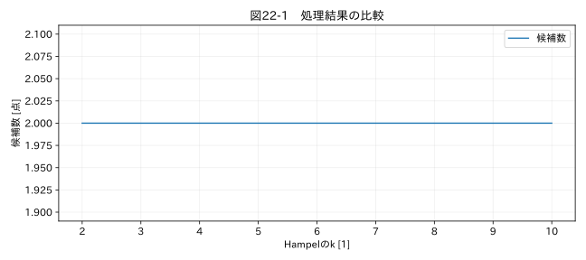

第VI部 実務の自動化 / 第22章
この章の節
クリーニングルールを設定ファイル化する
学習目標
コードと試験固有の設定を分け、YAML・JSONの値を検証する。未知のキーや不正な値を拒否し、ルール変更の影響を比較する。
22.1 定数をコードへ散らさない
試験Aでは温度範囲、試験Bでは圧力範囲が違う。コードの中に閾値を何箇所も書くと、修正漏れや対象機種の取り違えが起きる。列名、単位、周期、候補検出の窓、補間の条件を設定へ集めると、どの試験へ何を適用したかが見える。
ただし設定ファイル化は正しさの保証ではない。1 MPaを1000 Paへ変換する誤設定も、構文が正しければ読み込める。構造、型、数値範囲、単位関係、実データへの適用結果を段階的に検証する。
22.2 YAMLとJSON
JSONは構造が明確で多くのシステムと交換しやすい。YAMLはコメントを書けるため、人が運用根拠を添えやすいが、インデントや型解釈に注意が要る。PythonではYAMLを yaml.safe_load で読む。任意のPythonオブジェクトを構築する読み込み方法を使わない。
本アプリの設定例は次の通りである。閾値は圧力教材用の例で、他の試験へそのまま流用しない。
version: "pressure-review-1"
time:
column: 時刻
format: ISO8601
timezone: Asia/Tokyo
expected_dt: 0.1
columns:
pressure:
source: 測定値
unit: MPa
lower: 0
upper: 2.5
window: 11
k: 3.5
floor: 0.01
freeze_run: 8
interpolation:
enabled: false
columns のpressureは出力内部名、sourceは入力の列名である。lower、upper、floorは正規化後の単位で指定する。unitは入力の末尾単位の解析に使い、target_unitは出力単位のラベルである。scaleとoffsetを指定すると、数値化後に scale*x+offset を適用する。
22.3 不正な設定で止まる
windowは3以上の奇数、kとfloorは正、lowerはupper未満、expected_dtは正という検査を行う。interplation のような誤記は未知のキーとして拒否する。誤記を無視して既定値で動くと、読者は補間したつもりで未処理の結果を見ることになる。
補間を有効にするには、enabledをtrueにするだけでなく、max_gap_seconds、reason、approved_byを指定する。これらは組織の正式な承認システムを代替するものではない。教材では承認されたルールを記録する欄として使う。実業務へ組み込む際は、承認者の認証と変更権限を別に設計する。
22.4 ルール変更を数値で見る
Hampelのkを下げれば候補が増える傾向があるが、必ず正解へ近づくわけではない。図22-1は圧力教材に対する感度の比較である。比較する際は同じデータ、同じ窓、同じ単位を使い、k以外を固定する。複数設定を同時に変えると、何が差を生んだか分かりにくくなる。
関連する詳細実験は実践補講に掲載。入力形式・同期・補間・校正・多変量・チャンク境界を扱う。
実行するコードと結果
run.py · 共通処理の全ソース
教材フォルダで python examples/chapter22/run.py を実行。以下は省略のないスクリプト。共通モジュールは教材一式に含む。
from pathlib import Path
import sys
ROOT=Path(__file__).resolve().parents[2]
sys.path.insert(0,str(ROOT))
sys.path.insert(0,str(ROOT/'examples'))
import numpy as np
import pandas as pd
from common import load,truth,seconds,plot
from tsclean.core import numeric,timestamps,time_flags,hampel,freeze_candidates,interpolate_short,compare
import yaml
from tsclean.app import validate_config,process_frame
c=yaml.safe_load((ROOT/'configs/02_pressure.yaml').read_text(encoding='utf-8'))
validate_config(c);df=load('02_pressure');counts=[]
for k in [2,3,3.5,5,10]:
c['columns']['value']['k']=k
_,f,_,_=process_frame(df,c);counts.append(int(f.value__outlier_candidate.sum()))
print('k=2,3,3.5,5,10 の候補数:',counts)
plot(22,[2,3,3.5,5,10],{'候補数':counts},'候補数 [点]',xlabel='Hampelのk [1]')
検証環境での実行結果を開く
k=2,3,3.5,5,10 の候補数: [2, 2, 2, 2, 2]

22.5 フィルタ設定の管理
フィルタ条件を外部化するなら、方式、次数、カットオフ、サンプル周期、因果性、端点方式、適用帯域、承認用途をセットにする。カットオフの数字だけでは再現できない。HzなのかNyquistで正規化した値なのかも区別する。
最終アプリには自動フィルタ適用を組み込んでいない。第16章の独立スクリプトで波形の保全を検証し、必要なら検証済みの派生処理として拡張する。本アプリに未知のfilterキーを加えればエラーになる。受け付けて何もせず正常終了する設計にはしない。
22.6 設定変更のレビュー
設定のバージョン名とファイルハッシュを出力へ記録する。版名だけ変えて中身が同じ場合も、版名が同じで内容が変わった場合も分かるようにする。レビューでは対象データ、変更目的、閾値の根拠、旧版との候補差分、評価量への影響を確認する。学習用の正解情報へ過度に合わせた閾値を、未知の実データへ一般化しない。
演習
基礎演習
既定設定を読み、kごとの候補数を確認する。
応用演習
windowを10、floorを0、lowerをupperより大きくして、検証が止めることを確認する。
実務演習
MPaからPaへ正規化する設定に変えた。lower、upper、floor、単位表示のどれを変更するか。
演習解答・解説を表示する
基礎：実行結果と図を照合し、候補数だけで採用設定を決めない。
応用：いずれも不正としてValueErrorになる。失敗を無視して古い出力を使わない。
実務：scaleを10⁶、target_unitをPaとし、lower・upper・floorをPa基準へ換算する。入力unitはMPaのままにする。入力表記と出力単位を分けるためである。
章末まとめ
設定はデータ処理の一部であり、コードと同じく検証・版管理する。未知の設定を黙って無視しない。